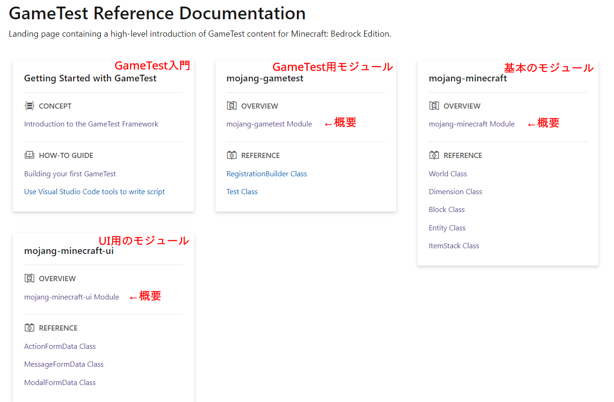
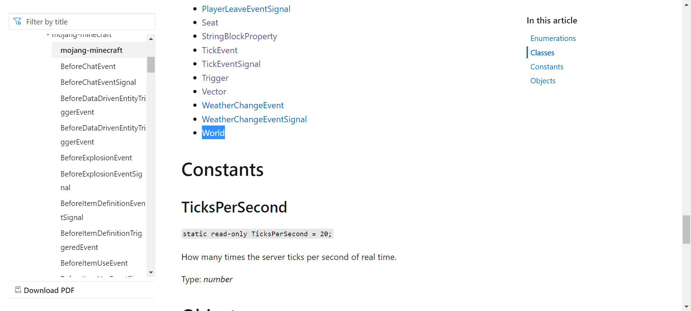
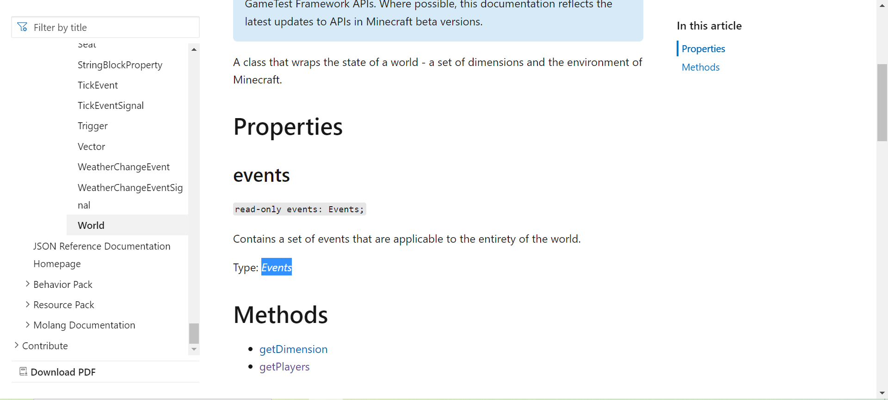

MinecraftBE - GameTest解説#2
目次は右上の「≡」から！
前回の続きです！
↓前回書いたスクリプト
Dat
scripts/Main.js
import { world } from "mojang-minecraft";
let time = 0;
world.events.tick.subscribe(eventData => {
if(time < 200) {
time = time + 1;
}
if(time == 120) {
world.getDimension("overworld").runCommand("say Hello, world!");
}
});
リファレンスとの対応
GameTestも自由度が高いので、できればリファレンスから情報を得て自分のやりたいことをやりたいと思います。
そのために、前回作ったスクリプトをもとにリファレンスの見かたについて解説します。
リファレンスのリンク
・GameTest Reference Documentation | Microsoft Docs
・↑のGoogle翻訳ぶち込みバージョン
どうしても歪になってしまうので、できるだけ英語で読んでほしいところですが......
最初のページ
左上から「GameTest(本来)の入門」「GameTestに使うmojang-gametestモジュールについて」
「スクリプト全体で使えるmojang-minecraftモジュールについて」「UI表示に使うmojang-minecraft-uiモジュールについて」の内容になっています。
「GameTest入門」は、アドオンをテストする"本来のGameTest"について書かれているだけなので、今回解説するような別にテストするわけじゃないスクリプトを学びたい場合は無視です。
その他はモジュールについての説明です。それぞれ「OVERVIEW(概要)」のリンクから全ての内容が見れます。
「REFERENCE(リファレンス)」は、OVERVIEWの中でもよく見られるであろう項目をピックアップしてるだけなので、GameTestで何ができるか漁るだけなら見る必要はないです。

今回見るのは一番右にあるmojang-minecraftモジュールの項目です。以前書いたコードのimport文を覚えていますか？ つまりはそういうことです^^
import { world } from "mojang-minecraft";
検知できるイベント
上記のimport文は「mojang-mincraft」モジュールから「world」クラスをインポートしてこいという文なので、
mojang-minecraftのOVERVIEWにあるリンクからWorldクラスを探します。

Worldクラスのページを開くとすぐに「Properties」があって、その下に「events」があると思います。
このeventsプロパティが検知できるイベントをすべて持っています。
他には返す値について書いてあります。
read-only events: Events;
「read-only」は読み取り専用ということを表し、world.eventsは「Events」型を返すということです。
リファレンスを読みながらコードを途中まで書いたとすると、こんな感じです。
import { world } from "mojang-minecraft";
world.event; // → Events型
次にEventsクラスはどんな値を持っているのでしょう？ 下のTypeからEventsのページに飛べます。

リンク先のPropertiesの章を見ると下にたくさんプロパティが書いてあります。これらが検知できるイベント全てです。
- beforeChat(チャット)
- beforeDataDrivenEntityTriggerEvent
- beforeExplosion(爆発)
- beforeItemDefinitionEvent
- beforeItemUse(右クリック)
- beforeItemUseOn(ブロックに対して右クリック)
- bforePistonActive(ピストンの動作)
- blockBreak(ブロックの破壊)
- blockExplode(ブロック由来の爆発)
- blockPlace(ブロックが置かれる)
- chat(チャット)
- dataDrivenEntityTriggerEvent
- effectAdd(ポーションエフェクトがつく)
- entityCreate(エンティティのスポーン)
- explosion(爆発)
- itemDefinitionEvent
- itemUse(右クリック)
- itemUseOn(ブロックに対して右クリック)
- pistonActive(ピストンの動作)
- playerJoin(プレイヤーの参加)
- playerLeave(プレイヤーの退出)
- tick(毎tick)
- weatherChange(天気の変化)
今回はtickを使いました。途中のコードはこんな感じです。
import { world } from "mojang-minecraft";
world.event.tick; // → TickEventSignal型
お決まりの形
同様に、TickEventSignalクラスはどんな値を持っているか調べます。
このクラスは二つのメソッドのみをもっているようです。イベントを観測するためにはsubscribeメソッドを使います。
subscribe(callback: (arg: TickEvent) => void): (arg: TickEvent) => void
このように型に関することが複雑に書いてありますが、コードにしてみればわかります。
import { world } from "mojang-minecraft";
world.event.tick.subscribe( eventData => { // → eventDataはTickEvent型
// 処理
});
subscribeメソッドに、eventDataを引数とする関数を渡すと、ある関数が返ってくるというふうになっているのですが、
これが関数で──eventDataに入るのはどこから来るんだ？というようにたどってるとわけがわからなくなってくると思うので、
JavaScriptに慣れてない場合はこれで一つのカタマリだと捉えるのがいいです。
world.event.〇〇.subscribe( eventData => {
// 処理
});
ちなみに「eventData」は関数の引数を表すダミー変数(↓で言う「x」)なので名前は自由です。
function myFunc(x) { // ここのxはオリジナルだよね
// 処理
}
ひとつのスクリプトで色んなイベントを検知する場合はこの"お決まりの形"をその分書きます。
import { world } from "mojang-minecraft";
world.event.beforeExplosion.subscribe( eventData => {
// 処理
});
world.event.blockExplode.subscribe( eventData => {
// 処理
});
world.event.explosion.subscribe( eventData => {
// 処理
});
具体的な処理
次は「お決まりの形」の中に書く処理についてです。前回のコード通りにコマンド実行で解説します。
コマンドはディメンションかプレイヤーのいずれかから実行できます。今回はディメンションから実行しようと思います。
world.getDimension("overworld").runCommand("say Hello, world!");
Worldクラスのページを見ると、Methodsの章にgetDimensionメソッドがあります。
このメソッドの引数にディメンション名を渡すとディメンションが取得できるということですね。
そしてこのメソッドはDimension型を返すようです。途中まで書いたコードは：
world.getDimension("overworld"); // → Dimnsion型
そこからDimensionクラスのページへ移動すると、runCommandメソッドをもつことが分かりました。
runCommandメソッドはスラッシュ無しのコマンド文字列を引数にとり、コマンドを実行したら何の値も返しません。
これで以上ということです。
お復習い
(1) 必要なクラスをインポート
import { world } from "mojang-minecraft";
イベントを観測するのに必要なので、worldクラスをインポートします。
(2) お決まりの形
import { world } from "mojag-minecraft";
world.events.〇〇.subscribe( eventData => {
});
イベントを観測するためのお決まりの形です。
(3) 毎tick実行
import { world } from "mojag-minecraft";
world.events.tick.subscribe( eventData => {
});
今回は毎tick処理を実行したいので、〇〇はtickにします。
他のイベントはEventsクラスのページから確認できましたね。
(4) ディメンションを取得
import { world } from "mojag-minecraft";
world.events.tick.subscribe( eventData => {
world.getDimension("overworld")
});
今回はディメンションからコマンドを動かすので、ディメンションを取得します。
ディメンションはWorldクラスから取得できます。取得するためのメソッドはWorldクラスのページから確認できましたね。
(5) コマンドを実行
import { world } from "mojag-minecraft";
world.events.tick.subscribe( eventData => {
world.getDimension("overworld").runCommand("say Hello, world!");
});
getDimensionメソッドはDimension型を返すので、そこからコマンドを実行できます。
コマンドを動かすメソッドはDimensionクラスのページから確認できます。
(6) 時間を数えるための変数を定義
このままだと、毎tick「Hello, world!」と言うようになってしまいます。まずは
import { world } from "mojag-minecraft";
let time = 0;
world.events.tick.subscribe( eventData => {
world.getDimension("overworld").runCommand("say Hello, world!");
});
適当な変数を定義して、初期値は0とします。
(7) カウントアップ
import { world } from "mojag-minecraft";
let time = 0;
world.events.tick.subscribe( eventData => {
time = time + 1;
world.getDimension("overworld").runCommand("say Hello, world!");
});
毎tickカウントアップするためにお決まりの形の中に書きます。
(8) 条件分岐
import { world } from "mojag-minecraft";
let time = 0;
world.events.tick.subscribe( eventData => {
time = time + 1;
if(time == 120) {
world.getDimension("overworld").runCommand("say Hello, world!");
}
});
毎tickカウントアップして、120になった時だけコマンドが実行されるように、コマンド実行部分をif文の中に入れます。
(9) ストッパー
import { world } from "mojag-minecraft";
let time = 0;
world.events.tick.subscribe( eventData => {
if(time < 200) {
time = time + 1;
}
if(time == 120) {
world.getDimension("overworld").runCommand("say Hello, world!");
}
});
コマンドを実行した後でも無限に増えていくのが嫌なので、ある程度増えたらカウントアップをやめるようにします。
(10) おまけ
import { world } from "mojag-minecraft";
let time = 0;
world.events.tick.subscribe( eventData => {
time += (time < 200)? 1 : 0;
if(time == 120) world.getDimension("overworld").runCommand("say Hello, world!");
});
こうして短く書くこともできますね。
次回はまた新しいコードを書いていこうと思います。